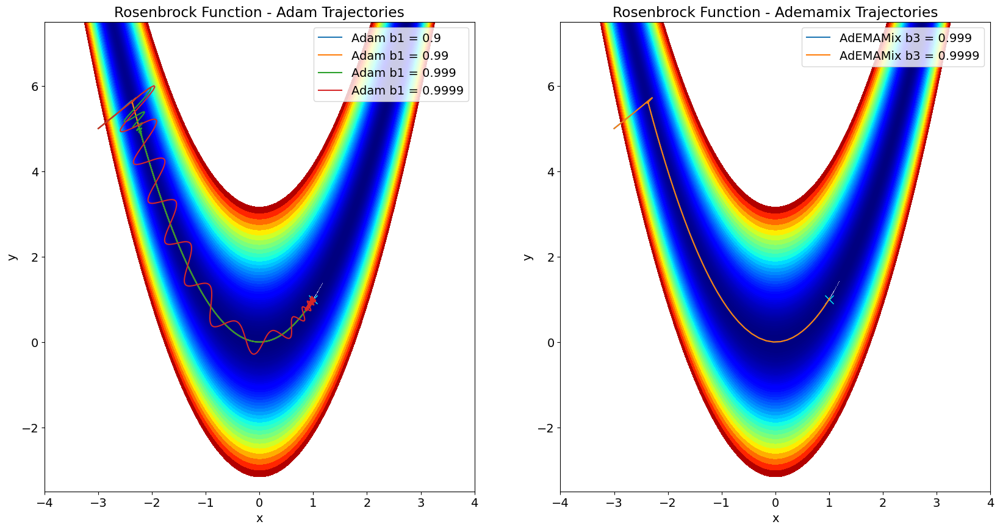
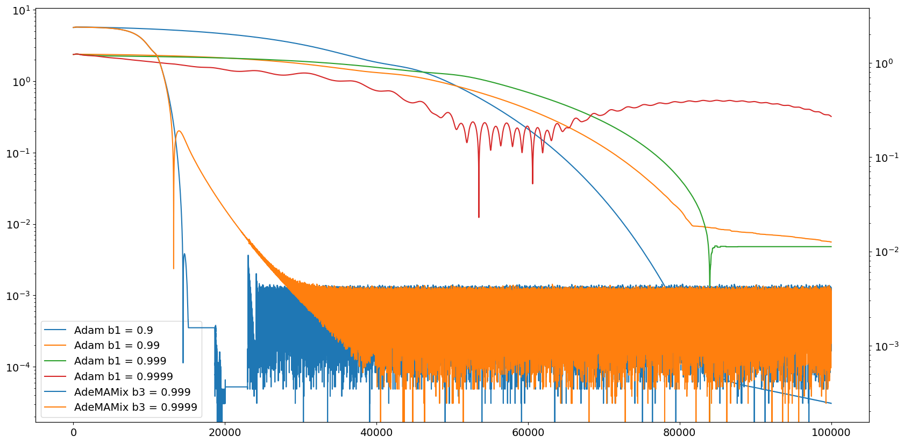

Recreate AdeMAMix Rosenbrock Plot from Paper#

This notebook attempts to recreate Figure 2 from the AdeMAMix paper
Imports#
from functools import partial
import matplotlib.pyplot as plt
import optax
import jax
import jax.numpy as jnp
import numpy as np
from mpl_toolkits.mplot3d import Axes3D
plt.rc("figure", figsize=(20, 10))
plt.rc("font", size=14)
from optax.schedules import linear_schedule
from optax._src import base
def cond_print(cond, fmt, *args):
return jax.lax.cond(cond, lambda: (jax.debug.print(fmt, *args), 0)[1], lambda: 0)
Functions#
def rosenbrock(x):
return jnp.square(1 - x[0]) + 100.0 * jnp.square(x[1] - jnp.square(x[0]))
# Create a grid of x and y values
x = jnp.linspace(-5, 10, 1000)
y = jnp.linspace(-5, 10, 1000)
X, Y = jnp.meshgrid(x, y)
# Compute the Rosenbrock function values for each point on the grid
Z = rosenbrock([X, Y])
num_iterations = 100000
Generate Adam Trajectories (Baseline)#
def _body_fn(carry, _, *, solver, b1):
params, opt_state, i = carry
grad = jax.grad(rosenbrock)(params)
updates, opt_state = solver.update(grad, opt_state, params)
params = optax.apply_updates(params, updates)
cond_print(
i % 25000 == 0,
"Objective function for b1={} at iteration {} = {}",
b1,
i,
rosenbrock(params),
)
return (params, opt_state, i + 1), params
all_b1_params = []
for b1 in [0.9, 0.99, 0.999, 0.9999]:
solver = optax.adam(learning_rate=0.003, b1=b1, b2=0.9999)
params = jnp.array([-3.0, 5.0])
print("Objective function: ", rosenbrock(params))
opt_state = solver.init(params)
_, all_params = jax.lax.scan(
partial(_body_fn, solve=solver, b1=b1),
(params, opt_state, 0),
length=num_iterations
)
all_b1_params.append(jnp.concatenate([params[None, ...], all_params], 0))
all_b1_params_array = jnp.array(all_b1_params)
Objective function: 1616.0
---------------------------------------------------------------------------
TypeError Traceback (most recent call last)
Cell In[5], line 22
18 params = jnp.array([-3.0, 5.0])
19 print("Objective function: ", rosenbrock(params))
20 opt_state = solver.init(params)
21
---> 22 _, all_params = jax.lax.scan(
23 partial(_body_fn, solve=solver, b1=b1),
24 (params, opt_state, 0),
25 length=num_iterations
[... skipping hidden 3 frame]
File ~/checkouts/readthedocs.org/user_builds/optax/envs/latest/lib/python3.11/site-packages/jax/_src/interpreters/partial_eval.py:2338, in trace_to_jaxpr(***failed resolving arguments***)
2336 with core.set_current_trace(trace):
2337 args, kwargs = in_tracers.unflatten()
-> 2338 ans_pytree = fun(*args, **kwargs)
2339 if fun_returns_flat_tree:
2340 # TODO(dougalm): make result paths optional
2341 ans = ans_pytree
TypeError: _body_fn() got an unexpected keyword argument 'solve'
Generate AdeMAMix Trajectories#
Create alpha scheduler#
alpha = 0.8
alpha = linear_schedule(0, alpha, num_iterations)
Create b3 scheduler#
def b3_scheduler(beta_end: float, beta_start: float = 0, warmup: int = 0):
def f(beta):
return jnp.log(0.5) / jnp.log(beta) - 1
def f_inv(t):
return jnp.power(0.5, 1 / (t + 1))
def schedule(step):
is_warmup = jnp.array(step < warmup).astype(jnp.float32)
alpha = step / float(warmup)
return is_warmup * f_inv(
(1.0 - alpha) * f(beta_start) + alpha * f(beta_end)
) + beta_end * (1.0 - is_warmup)
return schedule
def _body_fn(carry, _, *, solver, b3):
params, opt_state, i = carry
grad = jax.grad(rosenbrock)(params)
updates, opt_state = solver.update(grad, opt_state, params)
params = optax.apply_updates(params, updates)
cond_print(
i % 25000 == 0,
"Objective function for b3={} at iteration {} = {}",
b3(i),
i,
rosenbrock(params),
)
return (params, opt_state, i + 1), params
all_ademamix_params = []
for b3 in [0.999, 0.9999]:
b3 = b3_scheduler(b3, 0, num_iterations)
solver = optax.contrib.ademamix(
learning_rate=0.003, b1=0.99, b2=0.999, b3=b3, alpha=alpha
)
params = jnp.array([-3.0, 5.0])
print("Objective function: ", rosenbrock(params))
opt_state = solver.init(params)
_, all_params = jax.lax.scan(
partial(_body_fn, solver=solver, b3=b3),
(params, opt_state, 0),
length=num_iterations
)
all_ademamix_params.append(jnp.concatenate([params[None, ...], all_params], 0))
all_ademamix_params_array = jnp.array(all_ademamix_params)
Objective function: 1616.0
Objective function for b3=0.0 at iteration 0 = 1599.227294921875
Objective function for b3=0.9960060715675354 at iteration 25000 = 1.1232594943066943e-07
Objective function for b3=0.9980010390281677 at iteration 50000 = 6.792194540139462e-08
Objective function for b3=0.9986668825149536 at iteration 75000 = 1.3234323148481053e-07
Objective function: 1616.0
Objective function for b3=0.0 at iteration 0 = 1599.227294921875
Objective function for b3=0.9995999932289124 at iteration 25000 = 5.958846571729737e-08
Objective function for b3=0.9997999668121338 at iteration 50000 = 1.4210854715202004e-14
Objective function for b3=0.9998666644096375 at iteration 75000 = 2.3673273119584337e-08
Plot the Figure#
fig = plt.figure()
ax = fig.subplots(1, 2)
ax[0].set_xlabel("x")
ax[0].set_ylabel("y")
ax[0].set_title("Rosenbrock Function - Adam Trajectories")
# Show the plot
ax[0].plot([1], [1], "x", mew=1, markersize=10, color="cyan")
ax[0].contourf(X, Y, Z, np.logspace(-1, 3, 100), cmap="jet")
for i, b1 in enumerate([0.9, 0.99, 0.999, 0.9999]):
ax[0].plot(
all_b1_params_array[i, ::100, 0],
all_b1_params_array[i, ::100, 1],
label=f"Adam b1 = {b1}",
)
ax[0].set_xlim(-4, 4)
ax[0].set_ylim(-3.5, 7.5)
ax[0].legend()
ax[1].set_xlabel("x")
ax[1].set_ylabel("y")
ax[1].set_title("Rosenbrock Function - Ademamix Trajectories")
# Show the plot
ax[1].plot([1], [1], "x", mew=1, markersize=10, color="cyan")
ax[1].contourf(X, Y, Z, np.logspace(-1, 3, 100), cmap="jet")
for i, b3 in enumerate([0.999, 0.9999]):
ax[1].plot(
all_ademamix_params_array[i, ::100, 0],
all_ademamix_params_array[i, ::100, 1],
label=f"AdEMAMix b3 = {b3}",
)
ax[1].set_xlim(-4, 4)
ax[1].set_ylim(-3.5, 7.5)
ax[1].legend()
plt.show()

Plot Figure 2a from Paper#
N = num_iterations + 1
fig, ax = plt.subplots()
lns = ax.semilogy(
jnp.arange(N),
jnp.linalg.norm(
all_b1_params_array[0, :, :]
- jnp.ones(
2,
),
axis=1,
),
label="Adam b1 = 0.9",
)
for i, b1 in enumerate([0.99, 0.999, 0.9999]):
lns += ax.semilogy(
jnp.arange(N),
jnp.sqrt(
jnp.linalg.norm(
all_b1_params_array[i + 1, :, :]
- jnp.ones(
2,
),
axis=1,
)
),
label=f"Adam b1 = {b1}",
)
ax1 = ax.twinx()
for i, b3 in enumerate([0.999, 0.9999]):
lns += ax1.semilogy(
jnp.arange(N),
jnp.sqrt(
jnp.linalg.norm(
all_ademamix_params_array[i, :, :]
- jnp.ones(
2,
),
axis=1,
)
),
label=f"AdeMAMix b3 = {b3}",
)
labs = [l.get_label() for l in lns]
ax.legend(lns, labs, loc=0)
plt.show()

Print out final values#
print("Adam Values:")
print(
"Final value with b1 = 0.9:"
f" ({float(all_b1_params_array[0,-1,0])},"
f" {float(all_b1_params_array[0,-1,1])})"
)
print(
"Final value with b1 = 0.99:"
f" ({float(all_b1_params_array[1,-1,0])},"
f" {float(all_b1_params_array[1,-1,1])})"
)
print(
"Final value with b1 = 0.999:"
f" ({float(all_b1_params_array[2,-1,0])},"
f" {float(all_b1_params_array[2,-1,1])})"
)
print(
"Final value with b1 = 0.9999:"
f" ({float(all_b1_params_array[3,-1,0])},"
f" {float(all_b1_params_array[3,-1,1])})"
)
print("AdeMAMix Values:")
print(
"Final value with b3 = 0.999:"
f" ({float(all_ademamix_params_array[0,-1,0])},"
f" {float(all_ademamix_params_array[0,-1,1])})"
)
print(
"Final value with b3 = 0.9999:"
f" ({float(all_ademamix_params_array[1,-1,0])},"
f" {float(all_ademamix_params_array[1,-1,1])})"
)
Adam Values:
Final value with b1 = 0.9: (0.9999862909317017, 0.9999725818634033)
Final value with b1 = 0.99: (0.9999859929084778, 0.9999719858169556)
Final value with b1 = 0.999: (1.000010371208191, 1.0000207424163818)
Final value with b1 = 0.9999: (0.9527074098587036, 0.9081478714942932)
AdeMAMix Values:
Final value with b3 = 0.999: (1.000002384185791, 0.9999974966049194)
Final value with b3 = 0.9999: (0.9999936819076538, 1.000006079673767)